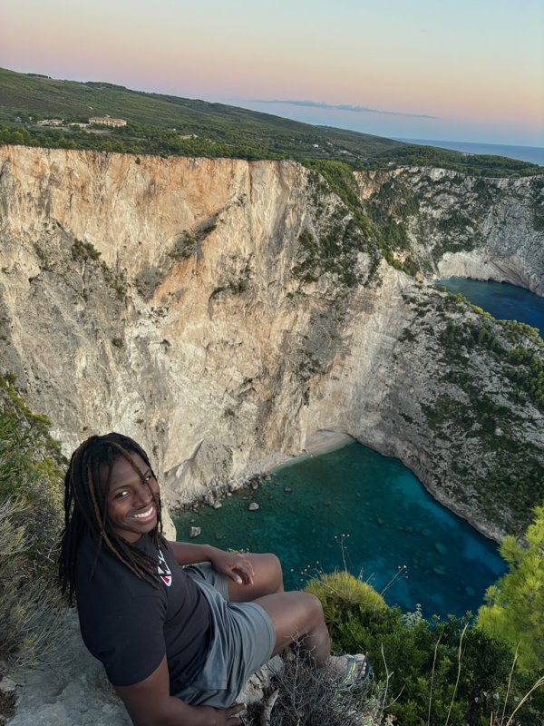

I'm Sam, Data & Insights Lead at LOROS Hospice, with an MSc in Data Science from Loughborough University. I like being organised and using data to understand what is actually happening, whether that's at work or in my own life. I'm naturally drawn to spotting patterns, trends and things I might otherwise overlook.
In my main job, I use SQL, Python, Power BI, Tableau, Power Apps, Power Automate and Excel to solve problems, automate work and make information easier to understand. Outside of that, I work part-time as a door supervisor, which has helped me build confidence, communication skills and the ability to stay calm under pressure.
I have a strong interest in boxing, fitness and self-improvement, and I carry the same mentality into almost everything I do. Whether it's work, training, money, fitness or my routines, I like to track progress, understand what is working and find ways to improve.